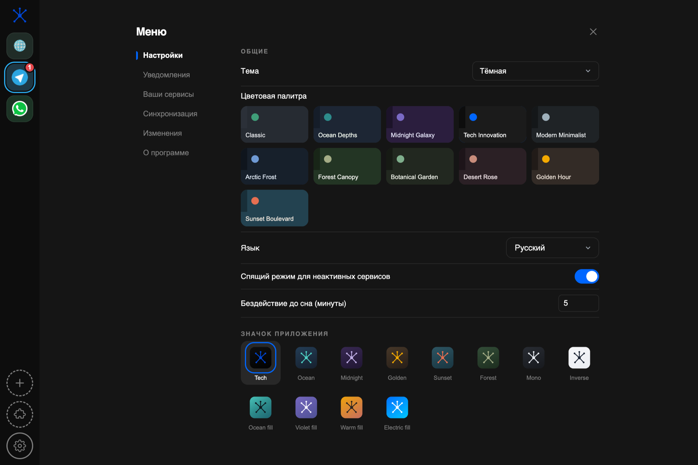
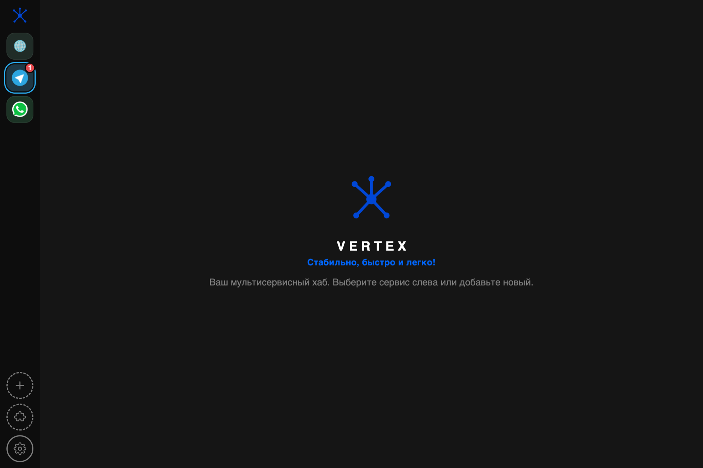

Appearance
Twelve icons, twenty-two themes
The mark is a vertex — the point where edges meet, which is what the app does with your services. Pick the colourway that suits your dock.

Messengers, mail and web apps in one window. Each service runs in its own isolated session, so several accounts of the same service sit side by side.

What it does
Vertex owns the frame — the rail, the title bar, notifications and settings. Inside, each service renders itself exactly as it does in a browser.
Every service gets its own storage partition. Two work accounts and a private one in the same messenger, all logged in at once, none of them aware of the others.
Banners come from macOS itself, so dismissing one does not drag you into the app. An in-app bubble takes over if the system turns them down.
Telegram, Slack, WhatsApp, Discord, Gmail, Notion, Figma, Linear and more from the catalog — or paste any URL and it becomes a service.
Inactive services are throttled and put to sleep after a few minutes, so a dozen open tabs do not cost you a dozen tabs' worth of CPU.
Content blocking, cookie banners, proxy. The registry is data only — plain JSON, no executable code is fetched or run.
Eleven palettes, each in a dark and a light version, plus twelve colourways for the app icon. Pick a look and the whole frame follows.
Appearance
The mark is a vertex — the point where edges meet, which is what the app does with your services. Pick the colourway that suits your dock.

Install
Download the DMG, drag Vertex into Applications. One extra step the first time — please read it, otherwise the app looks broken when it is not.
Vertex is signed ad-hoc, not with an Apple Developer ID — that certificate costs $99 a year and this is a free app. macOS therefore greets the first launch with “Vertex is damaged and can’t be opened”. The download is fine; macOS simply refuses to vouch for it.
Right-click Vertex.app and choose Open, then confirm. Or clear the quarantine flag once:
xattr -dr com.apple.quarantine /Applications/Vertex.app
After that it launches normally. Only the very first run is affected.